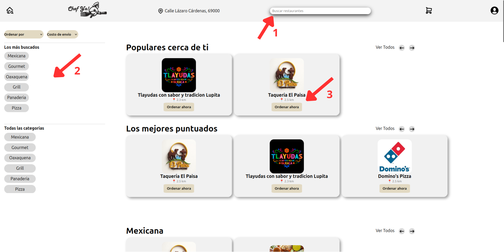

Bienvenido
Chef Ya! – Guía de usuario
Esta página resume los pasos que se muestran en el video: cómo entrar a Chef Ya, navegar por la página, buscar restaurantes, armar tu carrito y completar un pedido.
01 · Acceso
Registro e inicio de sesión
Iniciar sesión en Chef Ya es muy sencillo. Solo necesitas una cuenta de Google y acceder a la pantalla de inicio de sesión, a la cual puedes llegar desde la página principal haciendo clic en el botón “Registro”.
-
Desde la página principal, haz clic en el botón
“Registro” para ir a la pantalla de inicio de sesión.

-
En la página de Registro, presiona el botón
“Continuar con Google” para usar tu cuenta de Google.

-
Se abrirá una ventana de Google donde podrás elegir entre tus cuentas.
Selecciona la cuenta con la que quieras entrar:
- Si ya habías iniciado sesión antes, accederás directamente a tu cuenta.
- Si es la primera vez, se creará tu cuenta de Chef Ya automáticamente.
02 · Pantalla principal
Página de inicio de Chef Ya
Explica los elementos que se muestran cuando entras por primera vez: banner, categorías, restaurantes destacados, etc. Relaciónalo con los primeros minutos del video.
03 · Búsqueda
Buscar restaurantes y productos
Para buscar restaurantes o productos en Chef Ya debes estar en la página principal. No importa si todavía no has iniciado sesión: el buscador y los filtros están disponibles desde el inicio.
-
Usar el cuadro de búsqueda
En la parte superior verás la barra “Buscar restaurantes”. Escribe el nombre del restaurante o tipo de comida (por ejemplo, pizza o tlayudas) y presiona Enter. -
Filtrar por tipo de comida y ordenar resultados
En la parte izquierda encontrarás las categorías como Mexicana, Gourmet, Oaxaqueña, etc. También puedes usar los menús de “Ordenar por” y “Costo de envío” para ajustar los resultados según lo que necesites. -
Seleccionar un restaurante de la lista
En el centro verás los restaurantes organizados por secciones como “Populares cerca de ti” o “Los mejores puntuados”. Haz clic en la tarjeta del restaurante que te interese para ver su menú y poder iniciar un pedido.
04 · Restaurante
Detalle de restaurante y menú
Describe la pantalla de un restaurante: nombre, horario, productos, y cómo eliges un plato según lo que se ve en el video.
05 · Carrito
Agregar productos y revisar el carrito
Explica cómo en el video agregas platos al carrito, cambias cantidades y revisas el total.
06 · Pedido
Proceso de pedido y confirmación
Paso a paso del flujo de pedido que se ve en el video: dirección, método de pago, confirmación, y qué mensaje aparece al final.
07 · Perfil
Perfil, direcciones e historial
Explica las opciones de cuenta que se muestran en el video: editar datos, agregar direcciones, ver pedidos anteriores, etc.
08 · Pagos
Métodos de pago
Detalla los métodos de pago que enseñas en el video (efectivo, tarjeta, etc.) y cualquier mensaje importante que se muestre.
09 · Preguntas frecuentes
Preguntas frecuentes (según el video)
Aquí puedes escribir las preguntas que respondes al final del video o las dudas más comunes que mencionas.
10 · Soporte
Contacto y soporte
Agrega los medios de contacto que mencionas en el video: correo, WhatsApp, redes sociales, etc.
Ejemplo: Si tienes problemas, escríbenos a soporte@chef-ya.site.